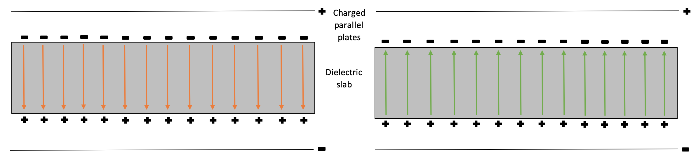

The key ideas behind D field -
Consider an ideal dielectric (perfect insulator) that has no free charge by definition.
Placing it in an electric field $\mathbf{E}_{applied}$ will induce a
polarisation
field $\mathbf{P}$ in it.
This will give rise to a
total electric field $\mathbf{E}_{total}$.
Define $ \mathbf{P} = N\mathbf{p} $, where $\mathbf{p}$ is the dipole vector.
Notice that $\mathbf{p}$ and hence $\mathbf{P}$ are parallel to $\mathbf{E}_{applied}$
In general, $ \nabla \cdot \mathbf{P} = -\rho_p $, where $\rho_p$ is the polarisation charge density.
Define the
electric displacement field, $\mathbf{D}$ as
$ \mathbf{D} = \epsilon_{0}\mathbf{E}_{total} + \mathbf{P} $.
In true vacuum, where there is no dipole by definition.
$$ \mathbf{P} = 0 $$
so,
$$ \mathbf{D}_{vacuum} = \epsilon_{0}\mathbf{E}_{applied} $$
$$ \nabla \cdot \mathbf{D}_{vacuum} = \nabla \cdot (\epsilon_{0}\mathbf{E}_{applied}) = 0 $$
$$ \nabla \times \mathbf{D}_{vacuum} = 0 $$
In a homogenous, isotropic and linear dielectric (HIL),
$$ \mathbf{P} = \chi_{e}\epsilon_{0}\mathbf{E}_{total} $$
where the electric susceptibility $\chi_{e}$ is a constant of proportionality.
so,
$$ \mathbf{D}_{dielectric} = \epsilon_{0}(1 + \chi_{e})\mathbf{E}_{total} $$
$$ \nabla \cdot \mathbf{D}_{dielectric} = \nabla \cdot [\epsilon_{0}(1 + \chi_{e})\mathbf{E}_{total}] = 0 $$
$$ \nabla \times \mathbf{D}_{dielectric} = 0 $$
Note: The units of the E-field are different to those of the P and D fields, hence field line density in this visualisation only provides a qualitative representation of field strength
The seemingly contradictory subtlety -
You might notice that the
E field is weaker in a dielectric than in vacuum but
the
D field does the exact opposite.
A polarised material indeed weakens the
E field
but enhances the
D field
due to the definition of the
P field.
Also note that $\mathbf{D}_{vacuum} \ne \mathbf{D}_{dielectric}$ in the derivation above.

The green arrows in the diagram represent the
induced (not resultant!) E field while the orange arrows represent the P field.
They are in opposite directions since the direction of P field is defined by that of the displacement from the negative to positive charge.
The resolution -
This discontinuity in the
D field at the boundary
is the result of (1) the abrupt disappearance of
P field, which originates from the polarisation charge density,
(2) the discontinuity of the
E field due to the surface charge density.